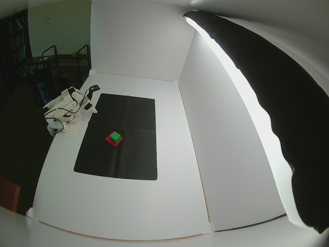
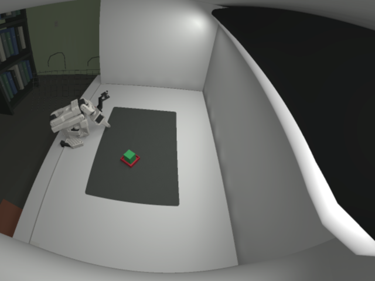
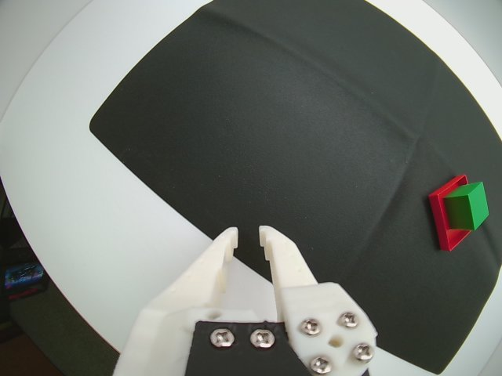
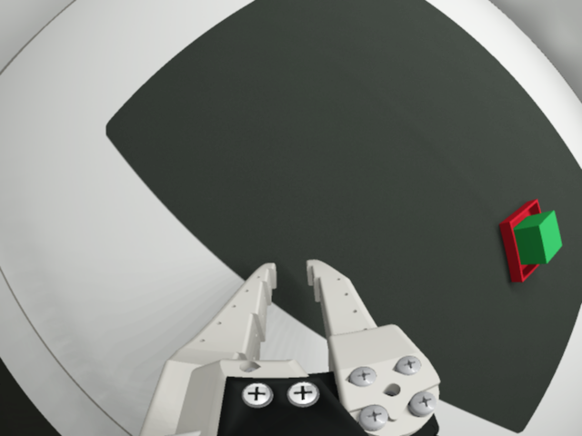

right_45 MAE 63.41 → 32.48/255; 48.8% lower


wrist MAE 79.18 → 20.25/255; 74.4% lower


Right-45 is the default installed-camera view, now using an approximate centered side-top mount with a 40 mm optical inset. The optional top-down view remains available. This saved comparison uses the optional photograph-fitted pose from assets/reference_camera.json; its errors do not describe the nominal default mount. These are actual Chrono sensor frames with the fitted wide-angle projection and fixed camera response.
The comparison's fixed lens center is estimated at 2.17 cm inward from the right wall, 39.42 cm from the open front, 49.92 cm above the floor. Yaw 13.01°, downward pitch 37.88°, optical roll -12.92°. Eight floor/mat landmarks: 2.64 px RMS.




Errors use the complete 640 × 480 RGB frame, including the room, arm, light and image noise. No registration, crop, warp or exclusion mask is applied when measuring error. The image-based pose and optical fit are estimates constrained by the nominal 35 × 24 × 20 inch box and 18 × 12 inch sheet.
The scene uses 3D geometry and procedural materials: bowed panels with open gaps, exposed board edges, an inflatable black-backed tube, floor/ceiling light return, reflective screw heads, bookshelf, wire cart, outlet and chair. Reference photos serve as fitting targets.
Parameters and full error measurements · Two-camera contact sheet